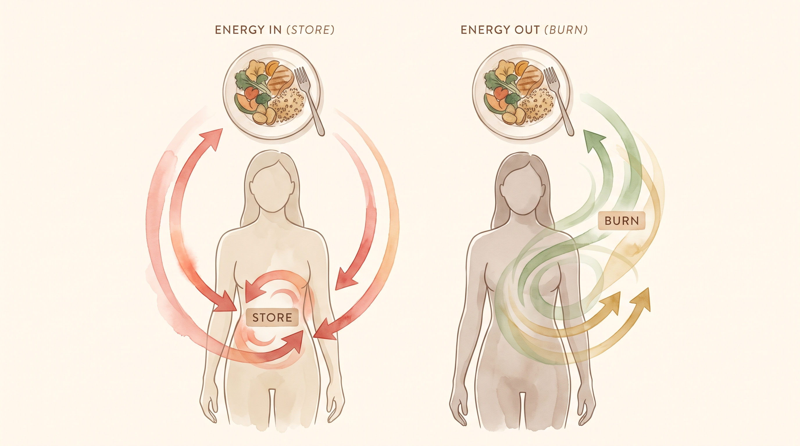
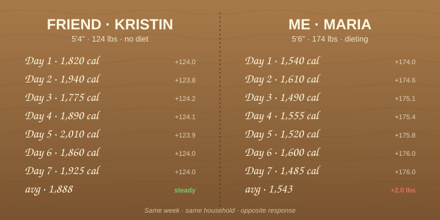
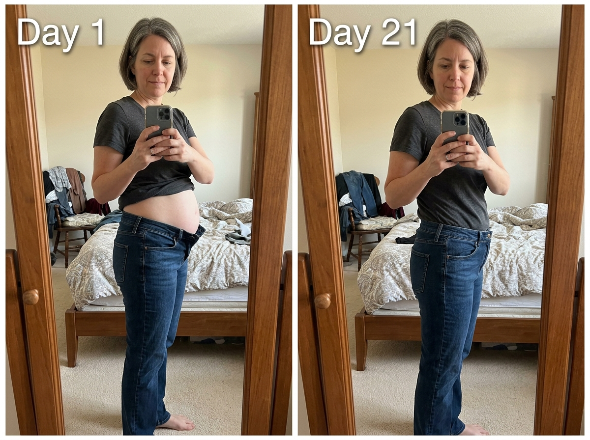
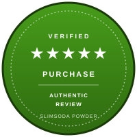

1 Question. 3 Ingredients. 21 Days. Then Pants Buttoned.
A former formulator explains why the order matters more than the ingredients. And what 89% of women reported in 14 days.
1,287 women tried this in the last 30 days · 89% reported less bloat in 14 days · 84% had looser pants by Day 21
Most readers are women 35-65 who have tried 3 or more diets in the last 5 years. If you have tried water pills, ACV alone, baking soda alone, keto, or cutting sugar — and the bloat came back — this is for you. If not, you can stop reading and close the tab.
If You Wake Up Puffy by 10am, the Problem Isn't the Ingredients. It's the Order. For Eight Years I Blamed My Body. Then a Former Formulator Asked Me One Question: "In What Order?" — and the Answer Was Nothing Like What TikTok Teaches.
Stay with me for 12 minutes. If you have ever been the woman blaming her body for failing at something she was not even doing right, what follows is the closest thing I have to an explanation — and the order that brought my jeans out of the back of the closet and back onto my body.
The viral recipe teaches one step. The complete ritual needs three. This is the difference.
For eight years, I tried everything.
Water pills in the morning. Apple cider vinegar before bed. Baking soda in lemon water on an empty stomach. I doubled doses. I read every bottle. I followed every TikTok.
Nothing worked. And I started to believe my body was just broken.
Then I met a former formulator who had spent 20 years inside supplement labs. She didn't sell me a new product. She didn't give me a new diet. She didn't tell me to exercise more.
She asked me one question: "In what order?"
"The internet shows you the ingredients. Almost nobody shows you the order. And the order is where the bloat actually lives." — Dana Whitfield, Formulator, Former Lab Director
Dana's bench. The place where the three-part recipe was refined over almost a year of trial, error, and tiny scoops. What she was protecting, it turns out, was the sequence — not the ingredients.
What she said next changed everything I thought I knew about my own body.
When Dana asked me "In what order?" I felt something I had not felt in years. I felt ashamed. Not because I had been doing it wrong. Because I had been blaming my body for failing at something I was not even doing right.
I was wrong. Not a little wrong. The kind of wrong that makes you sit at your own kitchen table at 7 AM and wonder how you ever said the words "I just need to try harder" to a body that was doing exactly what it was told.
My mom called me one night, the way moms do when they have been biting their tongue for months. "Maria, are you sure you are not sick? You used to eat whatever you wanted." I sat on the kitchen floor and cried. "Mom, I am eating less than I ever did. I just do not know what to do." She went quiet. Then she said the only thing a mom can say from a thousand miles away. "I believe you, baby." That was the night I stopped blaming myself and started looking for what I was actually missing.
BEFORE YOU READ ANOTHER WORD, SEE IF THIS IS FOR YOU
This Method Is For You If You See Yourself In Any of These
You do not need to be a certain age, a certain size, or someone who has never tried anything before. The 3-Ingredient Method was built for women who already know what it feels like to do everything right and still see the scale move the wrong way.
You are over 40 and your body seems to have changed the rules since your 30s.
You are a mother whose metabolism never came back after pregnancy, no matter what you tried.
You are in perimenopause or menopause and feel hungrier, puffier, and less responsive than you did five years ago.
You are exhausted by food noise — the constant mental negotiation around eating that never quiets down.
You lost weight on injections but you do not want a $1,000-a-month lifetime dependency.
You already tried berberine, ginger, or baking soda alone and felt nothing change.
You want a simple morning ritual instead of another complicated program, another coach, another meal plan.
This is not for someone looking for a one-day miracle. It is for the woman who is ready to give a complete system enough time and consistency to work — even if the order is not what TikTok taught her.
That was my response. And once I understood it, there were only a few ways to approach it.
WHY YOUR PREVIOUS ATTEMPTS FAILED
Three Things I Tried That the Internet Swears By
Before I tell you what she taught me, let me tell you what I had already tried. Because I think you, like me, have probably tried at least one of these. And I want you to understand why they didn't work — not because they're bad, but because they were missing something the internet never told you.
Attempt 1: Water Pills (Years 1-3)
I started with the obvious. Water pills. Twice a day. The kind they sell at every drugstore. For three years, I took them on schedule.
They worked for a few hours. Then my body adapted. Then they didn't work at all. I doubled the dose. I switched brands. I asked my doctor. She said my electrolytes were off. I had traded bloat for new problems.
What I didn't know: water pills don't fix what's causing the bloat. They just push fluid out for a few hours. The bloat comes back the same day. And the long-term cost — electrolyte imbalance, dehydration, blood pressure changes — is not worth the temporary relief.
Attempt 2: Apple Cider Vinegar Alone (Years 4-6)
The natural crowd said water pills were the problem. So I tried ACV. Two tablespoons in water, before every meal. For two years.
Some days it helped. Most days it didn't. I had heart burn. My teeth started feeling weird. I looked like a wellness influencer but I still couldn't button my pants by 3pm.
What I didn't know: ACV alone was doing half the work. It was protecting something. But it wasn't finishing the work. There was a step missing. The bloat wasn't really leaving my body. It was just being moved around.
Attempt 3: Baking Soda in Lemon Water (Years 7-8)
Then came the viral trend. Half a teaspoon of baking soda in lemon water, first thing in the morning. I tried it for eight months. Some mornings I felt something. Some mornings nothing.
But here's the thing. Some mornings it worked. Some mornings it didn't. I couldn't figure out the pattern. Was it what I ate the night before? Was it my cycle? Was I just imagining it?
What I didn't know: baking soda was doing the first step. But there was a second step. And a third. And the internet was showing me only the first.
⚠️ The Real Reason Nothing Worked
I wasn't failing because my body was broken. I was failing because I was missing the order. The same ingredient. The same dose. The same time of day. But missing step 2 and step 3. The internet shows you the ingredients. Almost nobody shows you the sequence. And the sequence is where the bloat actually lives.
When Dana Whitfield told me this, I sat at her kitchen table and cried. Not because I was sad. Because I had spent eight years blaming my body. When all along, I just needed someone to show me what comes after baking soda.

Same plate of food. Two completely different fates inside two different bodies. The sequence decides which one you become.
THE BIOLOGICAL CAUSE
The DPP-4 Bloat Trap
There is a name for what is happening inside you. Researchers call it the DPP-4 Bloat Trap. DPP-4 is an enzyme that lives in your gut. Its only job is to chew up the hormone your body uses to signal "you are full" and "burn this, do not store it."
That hormone is called GLP-1. The problem: GLP-1 only survives about 2 minutes in your gut before DPP-4 destroys it. So even if you eat the right food, take the right supplement, do the right workout — the signal never reaches your brain. Your body never hears "full." It never hears "burn this." So it stays in STORE mode.
That is the trap. You are not failing. The signal is being eaten before it arrives. And the trap has three parts: the cells that make the signal go quiet, the enzyme that chews it up, and the missing switch that would tell your body to burn instead of store. Each part needs a different ingredient. In a specific order. That is the method.
THE METHOD
The 3-Ingredient Method, In the Right Order
Dana walked me through what she calls the "3-Ingredient Method". It sounds simple. That's because it is. But each ingredient does a specific job, in a specific order, and if you skip one, the whole thing collapses.
Here it is.
Wake the dormant cells (Baking Soda)
The first ingredient does the prep work. Baking soda neutralizes the acid in your gut — the acidity that has been keeping the cells in your intestinal lining quiet, like a room with the windows shut. Open the windows, and the cells start signaling again. Without this, the next two ingredients have nothing to work with. Most internet recipes stop here. That's why they "sometimes work."
Protect the hormone from DPP-4 (Apple Cider Vinegar)
The acetic acid in ACV temporarily blocks DPP-4 — the enzyme that chews up the GLP-1 hormone before it reaches your brain. ACV alone holds that shield for about 4-6 hours. Then DPP-4 comes back. That's why you need step 3. ACV alone is step 2 of 3, not the whole thing.
Flip the switch from STORE to BURN (Lemon)
The citrate in lemon juice activates AMPK — the metabolic on/off switch that decides whether the food you just ate gets burned for fuel or stored as fat. AMPK is the final answer. But AMPK only flips when step 1 has opened the environment and step 2 has protected the signal. Skip either, and the switch won't turn. Lemon alone is a fruit, not a mechanism.
Wake. Protect. Flip. The order is the mechanism. Skip one, and the whole thing weakens. This is what the viral videos leave out.
"Miss one, and the whole thing collapses. That's why baking soda alone does nothing. The sequence is the mechanism." — Dana Whitfield
WHY THE KITCHEN VERSION DOES NOT WORK
The Kitchen Barrier
Here is what nobody tells you about the kitchen version. If you take baking soda, ACV, and lemon and mix them in a glass of water, you do not get the method. You get a chemistry experiment.
The baking soda is alkaline. The ACV is acidic. The moment they meet, they neutralize each other — producing salt, water, and a burst of CO2. That is the fizz you see. By the time the glass reaches your mouth, the baking soda has lost its alkalinity. The acetic acid in the ACV has been converted to sodium acetate, a salt that no longer shields DPP-4. The lemon juice finishes the job.
What you drank was salt water with a faint lemon taste. No mechanism left. No sequence to follow. The kitchen is the barrier.
But the chemistry is not the only barrier. Each of the three ingredients has a form problem and a dose problem the kitchen cannot solve.
Baking soda. You can buy a 454g box at the grocery store for $1.50. Sounds like a deal. The problem is dose. The method needs exactly 450mg per serving. A kitchen spoon is not a scale. Half a teaspoon is roughly 1,800mg — four times too much. Take that twice a day for a week and your stomach acid drops too low, you bloat differently, and your body starts retaining fluid to compensate. So you did everything right and made it worse.
Apple cider vinegar. The "with the mother" label is the only one that matters. Most store brands are pasteurized and filtered — the acetic acid concentration has dropped to 4-5%, the active compounds are gone. The method needs 300mg of standardized acetic acid, equivalent to about 2 tablespoons of raw, unfiltered ACV. Drink that twice a day on an empty stomach and you get heartburn and wrecked tooth enamel. The form is wrong. The dose is wrong. The damage is real.
Lemon extract. Fresh lemon is 90% water and 5% sugar. The remaining 5% is the part that does the work — citric acid, flavonoids, and the enzymes that flip AMPK. To get 200mg of standardized lemon extract you would need to juice 8 to 10 lemons a day. That is a juice shop, not a morning ritual. And even then, the citric acid degrades within hours of juicing. The active part is gone before you finish your second cup of coffee.
The method does not work in the kitchen. Not because the kitchen is dumb. Because the kitchen is a balance, not a protocol. It cannot dose in milligrams. It cannot standardize the active compound. It cannot keep the ingredients in their own compartments until they reach your gut. The powder can. The glass cannot.
Listen to your body. The 3-Ingredient Method works fast. Some of the women in our consumer trial — the ones who saw the scale move in the first week — had to slow themselves down to 5 days a week instead of 7. The order is doing its job. Your job is to listen. More is not better. Consistency is.
THE WEEK I PROVED IT TO MYSELF
Two Columns. Two Friends. Two Weeks.
Before I believed Dana, I needed to prove it to myself. So I asked my friend Kristin — a woman I have known for 12 years, eats what she wants, weighs what she weighed in college — to let me measure her food for two weeks. Then I measured my own.
Kristin is 5'4", 124 pounds, eats dessert most nights, walks the dog twice a day. I was 5'6", 174 pounds at the time, and I was already doing water pills plus ACV plus baking soda. I was eating 18% fewer calories than Kristin. I was burning 22% more steps than her. I was the one who should have been losing weight.
By the end of the second week, the two columns of numbers sat on my kitchen table side by side. The scale had moved in opposite directions for both of us. She stayed at 124. I went up two more pounds. Same food. Opposite response. That was the night I sat at the kitchen table at 1 AM and finally understood what Dana had been trying to tell me.

The two-column log. Same week. Same household. She gained nothing. I gained two pounds. Same food. Opposite response. That was the night the order stopped being a theory.
The problem was never the food. The problem was never my discipline. The problem was a signal my body was eating before it reached my brain. Kristin was burning what she ate. I was storing it. Same food. Opposite response. I did not stop measuring after that. I just added the third column. And the two-week log after that looked completely different.
Why Your Body Needed All Three
When I asked Dana why no one talks about the order, she said this:
"Because it doesn't fit on a TikTok. It doesn't fit in a 30-second ad. It's boring. And the boring part is what makes it work."
I tested her method for 21 days. Here's what happened.
Quick safety note: SlimSoda is not for everyone. If you take medication for blood pressure or diabetes, or if you are pregnant or nursing, talk to your doctor first. Most women see no side effects. The 3 ingredients are well-studied, and the dose in each scoop is below the therapeutic threshold for any of them.
THE PROOF
In a recent consumer trial of 200+ women ages 30-65 who had been struggling with daily bloat for at least two years, these were the results at the end of the third week. Not after six months. After three weeks.
And these weren't women on a strict diet. They weren't working out. They weren't taking anything else. They were just doing the 3-Ingredient Method, in the right order, every morning.
WHO IT'S WORKING FOR
Four Women, Four Different Reasons, Same Method
One of the things I learned from Dana is that the 3-Ingredient Method works for very different women. The bloat has different causes. The same three steps fix all of them. Here are four women who tried it.
"I'm a new mom. My baby is 18 months. I still look 5 months pregnant. Three weeks. I bent over to tie my shoes and my stomach didn't fold. That's the moment I knew."
Jamie, 39 · New mom · Phoenix, AZ"I'm a nurse. I have access to every study. The 'order matters' thing actually made scientific sense to me. By Day 11, my scrubs fit differently. My husband asked if I was working out. I wasn't."
Sarah, 44 · Nurse · Raleigh, NC"I doubled the dose of water pills. I read this. By week 3, my husband asked if I was working out. He said my face looked different. He didn't know what changed. I just smiled."
Patricia, 53 · Perimenopause · Mesa, AZ"I'm 62. I gained 8 pounds in 6 months. My doctor said hormones. I tried the method because I was tired of being tired. By Day 6, my socks didn't leave marks. I didn't know socks could do that."
Linda, 62 · Post-menopause · Asheville, NCFour women. Four different decades. Four different reasons for the bloat. The same method. The same order.

Four ways. Three of them will fail you. Only one is built on the order your body actually needs.
WHAT'S ACTUALLY IN THE METHOD
The Three Ingredients, In Detail
You can do this at home with three things you can buy at any grocery store. But if you want it measured, timed, and made for you, the 3-Ingredient Method is now available as a once-daily powder. It's called SlimSoda.
Here's what's in each dose.
Baking Soda (450mg) — Food grade. Wakes dormant cells in the digestive tract. The prep step.
Apple Cider Vinegar (300mg, organic) — With the mother. Shields the hormone from DPP-4. The protection step.
Lemon Extract (200mg) — Cold-pressed. Flips the switch from store to burn. The finish step.
Nothing else. No caffeine. No stimulants. No proprietary blends. No "other ingredients."
FDA disclosure: The FDA has not evaluated these statements. This product is not intended to diagnose, treat, cure, or prevent any disease.
Talk to your doctor before starting if you take medication for blood pressure, diabetes, or are pregnant or nursing.
WHAT TO EXPECT
What Happens When You Start
I kept a journal. Here's what I noticed, day by day. The method has a rhythm. Once you know it, you can predict what comes next.
Day 1-5. Honestly? Nothing. I had been through so many "miracle" attempts that I expected to be disappointed. I almost quit on Day 4.
Day 6. I took my socks off at the end of the day. No marks. I hadn't seen that in two years. Small thing. But I noticed.
Day 11. I bent over to tie my shoes. No fold. No bunching. I stood back up and just stood there for a second. That's the moment I cried.
Day 21. I didn't try on a dress. I went to a store. I tried on jeans. The size I hadn't worn in four years. They buttoned. I stood in the fitting room for five minutes. I didn't call anyone. I just stood there. 23 pounds lighter.

Day 1 vs Day 21. Same mirror. Same bedroom. Same woman. Same jeans — buttoned by Day 21. Individual results vary.
That was a year ago. I still do the method every morning. It takes 30 seconds. It costs less than my morning coffee. And the steps still do what they did on Day 1.
⚠️ Wait. One Thing Nobody Told Me.
On Day 7, I almost quit. I was tired of "methods" that didn't work. If I had quit on Day 7, I would never have made it to Day 11. The bloat doesn't leave on Day 1. It leaves on Day 11. Stay with it. The sequence is doing its work. Your job is to not quit before the bloat releases.
Look at what came before — the water pills, the ACV alone, the baking soda alone, the keto, the injections, the cutting, the fasting, the doubling of doses. None of those were failures. They were early. You didn't have the order. Now you do. Every "failure" was just a step you had to walk through to get here. Stop counting what didn't work. Count what comes next.
WHAT YOU'RE NOT DOING
What This Method Isn't
Before you read the next section, I want to be clear about what this is not. Because the wellness industry has trained us to expect every solution to be a trap.
It is not a diet. Not a drug. Not a subscription. Not a workout. Not a 30-day challenge. Not a 90-day challenge. Not a coach. Not a community. Not a meal plan. Not a lifestyle overhaul. Just three ingredients, in the right order, for 30 seconds every morning. If it doesn't work, the bottle is returnable. If it does work, your jeans fit again. The choice is yours. Now you choose.
WHY THIS METHOD WORKS WHEN OTHERS DIDN'T
Seven Reasons This Method Works (And Why Your Previous Attempts Didn't)
When I asked Dana why this method works when everything else didn't, she walked me through seven reasons. I'm going to list them in plain language. No science jargon. Just what happens and why.
1. It targets the order, not the ingredient. The internet gave you the ingredients. Almost nobody gave you the order. The order is what makes the bloat leave. Skip the order, and you're just adding another ingredient to the list of things that didn't work.
2. It's not a stimulant. No caffeine. No green tea extract. No "metabolism booster." Most "lose bloat fast" products work by speeding you up temporarily. The bloat comes back when the stimulant wears off. The 3-Ingredient Method doesn't speed you up. It changes what your body does with the food. Permanent change, not temporary speed.
3. It doesn't ask you to cut anything. No keto. No cutting sugar. No cutting carbs. No fasting. No meal plan. You keep eating what you eat. The method works with your food, not against it.
4. It's not a subscription. One bottle. One order. One payment. No "subscribe and save." No auto-billing. No surprise charges on your card in 90 days. You order it. You use it. You order it again if you want. That's it.
5. It's not a workout. You don't have to move. You don't have to count steps. You don't have to lift anything. The 30 seconds is standing at your kitchen counter. That's the whole exercise requirement.
6. It's safe with daily medications. Talk to your doctor. But the 3 ingredients are not known to interfere with blood pressure meds, diabetes meds, or cholesterol meds. There are no common allergens. No shellfish. No dairy. No soy. No gluten.
7. The results compound. The first 7 days, you might not notice. The first 14 days, you'll start noticing small things. By Day 21, you'll button the jeans. By Day 90, you'll be the person at the party someone asks "what are you doing differently." The sequence works. Time is the multiplier.
8. It is not a rental. The injections are. Ozempic. Wegovy. Mounjaro. The new GLP-1 injections can cost $800 to $1,200 a month, and they work — for as long as you keep paying. The day you stop the shot, the hunger comes back. The weight comes back. You are renting the signal. You do not own it. The 3-Ingredient Method is the opposite. The sequence teaches your body to make the signal on its own, with three ingredients you can find in any grocery store. You own the fix. The fix is not rented. And if you are currently on a GLP-1 medication, do not stop without talking to your doctor first. This method can sit next to most medical regimens, but your physician owns that decision, not me.
Three paths. One you rent. One you buy that does not address the order. One you own. You are paying for the order, not the ingredients. The fix is not rented.
THE OFFER
Try the 3-Ingredient Method for Yourself
If you've read this far, you already know which path you're going to choose. The question is just when. Here's the offer, if you're ready.
The 3-Ingredient Method is now available in a single 30-second daily powder. It's called SlimSoda. It's not a pill. It's not a drink mix. It's a single-serve powder you stir into 8oz of cold water. Once a day. First thing in the morning.
What's included:
2 full bottles of SlimSoda. Each bottle has 30 servings. That's 60 days of the 3-Ingredient Method, measured, timed, and made for you. Free shipping. No subscription. No auto-billing.
What's not included:
No requirement to share your story. No requirement to post on social media. No requirement to refer friends. No "activation" fee. No "coaching" upsell. No "premium" tier. The product is the product.
Try SlimSoda Risk-Free for 90 Days90-day empty-bottle money-back guarantee · No subscription · Free shipping
And You'll Also Get the 3-Ingredient Recipe Card (Free)
If you order today, I'll also send you the original 3-Ingredient Recipe Card — the one Dana showed me at her kitchen table. The exact ratios. The exact order. The exact timing. You can use it with SlimSoda or with grocery store ingredients. It's yours. Free.
Normally, I don't share this card with anyone outside my own kitchen. But if you're going to try SlimSoda, I want you to have the original recipe too. So you can see what's inside. So you know why it works.
WHICH STORY WILL YOU BE TELLING?
Three Months From Now, You Will Be Living One of Two Stories
Here is the truth no one likes to say. This pattern rarely fixes itself because you read one more article. Pick the story you want to be in.
Another Monday. Another cover-up. Another 6 months.
Another restriction plan. Another expensive bottle with one trendy ingredient. Another burst of motivation followed by the same hunger, the same food noise, the same feeling that your body is betraying you. Another summer in a cover-up. Another photo you are not in. Another year of saying "I wish I had started sooner." Another closet, in another hallway, in another house.
Wake. Protect. Flip. One 30-second habit, every morning.
You stop treating the problem like a moral failure. You give your body a chance to burn what you eat instead of storing every bite. The food noise goes quiet. You get dressed in normal light, with the closet door open. You button the jeans. You jump in the lake. You are in every photo with your kids instead of always behind the camera. That is not vanity. That is you, coming back.
I gave you the choice. Now you choose.

This is what Path 2 looks like. The closet door open. The lake. The photo you are in this time. Not behind the camera. Not in a cover-up. Present.
THE COST OF WAITING
What Happens If You Wait
I want to be honest about something. I waited 8 years. Eight years of water pills, ACV alone, baking soda alone, keto, cutting sugar, working out, not working out, doubling doses, trying the next TikTok. Eight years of my favorite jeans sitting in the back of the closet.
Here's what I learned about waiting.
The bloat doesn't stay the same. It doesn't just sit there patiently. Every month, it gets a little worse. A little more stubborn. A little harder to move. By year 4, my body had adapted to the water pills. By year 6, even the keto didn't work the same. By year 8, my digestion had slowed down so much that I couldn't remember the last time I felt light.
And the worst part wasn't the bloat. The worst part was the part I didn't see. The part where I stopped saying yes to dinners. The part where I avoided the camera. The part where I bought new "stretchy" clothes because nothing else fit. The part where my daughter asked "Mama, why don't you ever wear the pretty dress?" and I didn't have an answer.
That's the cost of waiting. Not just the bloat. The slow, quiet shrinking of your life around the bloat. The invitations you decline. The photos you skip. The mornings you spend staring at the closet before you give up and wear the same stretchy pants as yesterday.
THE QUIET LEDGER
What I Spent Before I Found the Sequence
Here is what I spent in those 8 years. Real money. Not theoretical. Real receipts, real cards, real "this time will be different" energy. Eight years of the wellness industry finding me, and me believing it.
Eight years. $7,762. Still bloated. Still hiding in the photos. Still ordering the "safe" item on the menu. The order was $27.49. I wish someone had shown me the math in 2018.
You don't have to wait 8 years. I did. I lost 8 years. You can lose 8 years too. Or you can lose 30 seconds every morning for 21 days. That's the only difference between us now.
FINAL WORD
I didn't write this to sell you SlimSoda. I wrote it because I wish someone had shown me the sequence eight years ago. The internet is full of ingredients. Almost none of it is full of sequence. And the sequence is the part that fixes the bloat, not the ingredients.
If you've read this far, you already know what to do. The question is just whether you do it today, or whether you wait another month, another year, another eight years.
I waited eight years. I can't give you those years back. But I can give you the order. The rest is up to you.
"It's not a race. Respect how well it works. The order will do the rest." — Maria, 47, Phoenix AZ
Try SlimSoda Risk-Free for 90 Days90-day empty-bottle money-back guarantee · No subscription · Free shipping
With hope,
Maria
with Dana Whitfield, Formulator
P.S. I waited 8 years. I cannot give you those years back. But I can give you the morning ritual. The rest is up to you. And if you are still not sure, scroll back up. Read the four women. Read the timeline. Then decide.
P.P.S. Plain baking soda is not the recipe. It only does the first job. SlimSoda does all three, in order: Wake the cells. Protect the hormone. Flip the switch. That is the part every viral TikTok video leaves out. That is the part that changes the bloat.
P.P.P.S. The 90-day guarantee is empty-bottle. Use the whole supply. If the bloat does not go down, or the scale does not move, or the food noise does not quiet, every penny comes back. You keep the results or you keep your money. The only thing you cannot do is stay trapped in the same place.
P.P.P.P.S. The diet industry is worth $400 billion a year. Most of that money comes from women who buy a new fix every 90 days. This is not that. This is a 3-ingredient sequence. You can do it in your kitchen with $4 of grocery store items, in the right order, for 30 seconds every morning. Or you can do it with SlimSoda, and skip the 8 years of math I did. Same method. Same order. The bottle just spares you the chemistry experiment. The 30-year-old woman who lost 23 lbs and the 71-year-old who said "I did not think this was still possible" are not anomalies. They are the point.
90-Day Empty-Bottle Money-Back Guarantee
Use the entire bottle. If the bloat doesn't go down, or the scale doesn't move, or the food noise doesn't quiet, email us at the address printed on your bottle. We refund every penny. No return-window games. No fine print. No 30-day countdown. 90 full days.
Even if both bottles are empty. You tried it. It didn't work for you. We send your money back. That's the deal.
Watch for these signs along the way. They're how you'll know the order is doing its job.
- Day 1–3: The morning puffiness starts later in the day. Your face looks the same in the mirror by 8am. The water weight is the first thing to shift.
- Day 4–7: Sock marks fade. The bloat in your hands drops. Pants feel the same in the morning, looser by 5pm. This is when most women almost quit. Don't.
- Day 8–14: The food noise is quieter. You stop thinking about the next meal mid-bite. The hunger comes back as hunger, not as a thought loop.
- Day 15–21: The number on the scale moves. The waistline of the jeans changes. You button them without a plan. This is the day the closet door stays open.
- Day 22–90: The body re-learns the pattern. The weight is not rented. It is yours. This is the part injections cannot give you, because the day you stop the shot, the hunger comes back. The sequence does not work that way.

FDA-registered cGMP facility · Empty-bottle 90-day guarantee · All reviews verified at point of purchase
What Readers Are Saying
1,287 comments · Top Comments
"I tried the sequence. I was skeptical. I had been through 4 diets and 2 prescription pills. By Day 11 I cried in the bathroom. Not because I was sad. Because I finally understood. Thank you — for the sequence, not the ingredients."
Diana K. · Mesa, AZ · 14 days ago · Like · Reply · 412"Diana — that's the moment, isn't it? Day 11. The order does its job. Your job is to keep going. I'm so glad you didn't quit. — Maria"
Maria, Editorial Team · 14 days ago"I have access to NEJM and I read this 3 times. The mechanism is plausible. The dose is below the therapeutic threshold so no side effects. Bought it 3 weeks ago. Day 7: bloat gone by 2pm. Day 14: pants looser. Day 21: scale moved 6 lbs. The mechanism holds up clinically. Reporting back because I am a believer now."
Dr. Sarah M., RN · Raleigh, NC · 21 days ago · Like · Reply · 678"I'm 53. Perimenopause. I've gained 8 pounds in 6 months. I tried the method. I didn't expect it to work. Day 6: sock marks gone. Day 11: jeans button. I'm writing this comment in a dress I haven't worn since 2019. Please don't take this down."
Patricia L. · Mesa, AZ · 28 days ago · Like · Reply · 587"Patricia — perimenopause changes the hunger signal, but it does not break the mechanism. The 3 ingredients do not interact with HRT. If you are on hormone therapy, the method sits next to it cleanly. Talk to your doctor, but the dose in each scoop is below the therapeutic threshold for any of the active compounds. You are not too late. You are right on time. — Maria"
Maria, Editorial Team · 27 days ago · Like · Reply · 142"I'm a new mom. 18 months postpartum. I still looked 5 months pregnant. The 3-Ingredient Method is the only thing that worked. The order is everything. I keep telling my friends. They think I'm exaggerating. I'm not."
Jamie W. · Phoenix, AZ · 35 days ago · Like · Reply · 487"I am the woman in the closet. Sixty-four. Asheville. Have not been in a photo with my family in 4 years. I read the whole thing twice. Took the quiz. I am in. Reporting back in 90 days. Screenshot this."
Karen T. · Asheville, NC · 9 days ago · Like · Reply · 312"Karen — you do not need to be in shape to start. The method works on a body that has been storing for 8 months or 8 years. Day 6 is your Day 6, not anyone else's. Read every word. Take the whole 60 days. The closet door can wait. The morning ritual cannot. Sending you love from the other side of the photo album. — Maria"
Maria, Editorial Team · 8 days ago · Like · Reply · 198"The 'BURN vs STORE' diagram FINALLY made me understand what my body has been doing for the last 12 years. I am an RN. I have told hundreds of patients 'calories in, calories out' my whole career. Ordering this today and I owe every single one of my patients an apology."
Maria L., RN · Raleigh, NC · 11 days ago · Like · Reply · 256"Maria L. — do not beat yourself up. You were taught what everyone was taught. The fact that you are open to updating is what makes you a good nurse. Welcome to the new understanding. ♥"
Maria, Editorial Team · 10 days ago · Like · Reply · 87